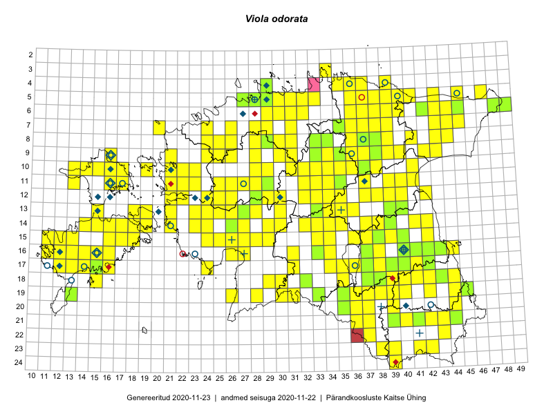

Viola odorata
Uuendatud: 2016-12-02
Kaardile koondatud taksonid: Viola odorata L.

Kaart põhineb 545 kirjel, neist vaatlusi 536 ja eksemplare 9. Taksonit on leitud 250 ruudust.
Kuvatud viited 20 esimesele andmebaasikirjele, ülejäänud PlutoFis
- Thea Kull: 2015-04-27: 07-45: GPS punkt
- Meeli Mesipuu, Kadri Tali: 2015-04-30: 17-40: ala
- Meeli Mesipuu, Kadri Tali: 2015-04-30: 17-40: GPS punkt
- Meeli Mesipuu, Kadri Tali: 2015-04-30: 17-40: GPS punkt
- Meeli Mesipuu, Kadri Tali: 2015-04-30: 17-39: ala
- Meeli Mesipuu, Kadri Tali: 2015-04-30: 17-39: GPS punkt
- Meeli Mesipuu, Kadri Tali: 2015-04-30: 17-39: GPS punkt
- Meeli Mesipuu, Kadri Tali: 2015-04-30: 17-39: GPS punkt
- Meeli Mesipuu, Liina Oja: 2015-04-27: 08-43: ala
- Meeli Mesipuu, Liina Oja: 2015-04-27: 08-43: ala
- Peedu Saar, Meeli Mesipuu: 2015-05-05: 16-38: GPS punkt
- Peedu Saar: 2015-05-09: 13-30: ala
- Peedu Saar, Timo Luhamäe: 2015-05-09: 12-28: ala
- Peedu Saar, Timo Luhamäe: 2015-05-09: 12-29: ala
- Peedu Saar, Timo Luhamäe: 2015-05-10: 12-30: ala
- Peedu Saar, Timo Luhamäe: 2015-05-10: 12-30: GPS punkt
- Peedu Saar, Timo Luhamäe: 2015-05-10: 12-32: ala
- Peedu Saar, Timo Luhamäe: 2015-05-10: 12-32: GPS punkt
- Peedu Saar, Timo Luhamäe: 2015-05-11: 12-37: ala
- Peedu Saar, Timo Luhamäe: 2015-05-11: 12-37: GPS punkt